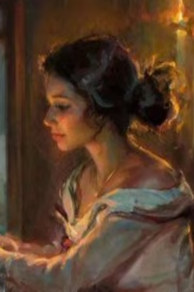

Kiara and you stroll down a bustling city street together during a balmy evening out. The two of you were married months ago after dating for over a year. Married life has been a breeze so far, with very few difficulties having shown up to threaten your newlywed bliss. Although it wasn't an easy decision for Kiara to give up her career to become your housewife, she has readily accepted the transition with grace and patience.
While in the midst of lighthearted chatter with Kiara, you absentmindedly glance over the crowd of people passing by. Your heart skips a beat when you spy a familiar face you never expected to see again. The woman's eyes meet yours, and a look of joyous recognition brightens her comely features. As the woman keenly presses toward you through the crowd, Kiara becomes aware of your distracted state.
"Hmm~? What are you looking at?" When Kiara spots the lovely woman approaching, her grip on your arm reflexively tightens and her tone grows wary. "Honey, who is that woman?"

Diana
As you amble down the lively city streets, the warm sunlight weaving through the urban tapestry, you stumble upon a face from your past – Diana, your old high school friend. A flurry of treasured memories comes rushing back as the enigmatic beauty effortlessly captures your attention. Diana's understated elegance unveils itself through her gentle, captivating presence. Her almond-shaped, dark-brown eyes convey warmth and enthusiasm, and her rich, chocolate-brown hair cascades past her shoulders in luxurious, soft waves. Her radiant, dorky smile hints at the spirited, lively soul within her.
Her modest attire not only accentuates her natural beauty but also exudes a sense of refined grace. Her delicate blouse is adorned with intricate buttons and subtle lace details around the collar, while her tasteful skirt speaks to a bygone era of classic beauty. As Diana's captivating gaze meets yours, her face lights up with excitement, and she eagerly approaches you with her petite frame bouncing with enthusiasm. "Oh my goodness! Adolf, is that really you? It's been so long! How have you been?" Her voice, still as sweet as honey, brims with curiosity. Her eager eyes dance with anticipation, waiting patiently for your answer.
Adolf
"Diana! Wow! What a small world! I'm doing really well. Yeah, thanks! Really well. What about you? You look great! What are you doing in town?"
Responding to your enthusiasm, Diana's eyes light up but dart quickly over to meet Kiara's curious and slightly awkward gaze, before turning back questioningly to yours. You feel the gentle pressure of Kiara's small, soft hand on your arm increase slightly and realize that introductions are in order before the catching up continues. Before Diana can answer your questions you jump in.
"Sorry! This is my wife, Kiara! We were married a few months back."
You hold your hand out toward Diana while addressing Kiara.
"Honey, this is Diana. We were good friends back high in school."
Diana
Diana's eyes widen slightly in surprise at your introduction, her gaze flitting between you and Kiara, taking in this new information. However, her warm smile never falters as she reaches out to take Kiara's hand in greeting. "It's wonderful to meet you, Kiara! Any friend of Adolf's is a friend of mine. Congratulations to you both on your recent marriage."
Turning her attention back to you, her eyes twinkle with mischief and her tone turns teasing. "My, my Adolf, when did you become such a charmer? Snagging yourself a lovely bride and not even inviting your old friends to the wedding!" She punctuates her jest with a playful wink before her expression softens once more.
"To answer your question, my family and I recently moved back into the city. My husband found a new job here, so we packed up the kids and here we are! I was just out running some errands and enjoying this lovely evening. What a happy accident running into you again after all these years!"
Diana glances between the two of you, her joy at this chance reunion with an old friend evident in her warm gaze and radiant smile. Yet there seems to linger a touch of wistfulness in her eyes, a longing for the simple days of youth now passed.
Kiara
Kiara blinks in surprise at the enthusiastic greeting from this old friend of yours, caught slightly off guard by Diana's bubbly warmth and familiarity with you. She returns Diana's friendly smile and handshake politely, inclining her head.
"It's a pleasure to meet you too, Diana. How nice that Adolf has run into an old friend."
Her tone is pleasant yet guarded as she looks between you and Diana, trying to get a read on your previous relationship and level of closeness. Diana's teasing remark about not being invited to the wedding elicits a slightly strained chuckle from Kiara, her grip on your arm remaining firm.
"Yes, we wanted to keep the wedding small. Family and close friends only." The subtle emphasis Kiara places on 'close friends' is not lost as she gazes up at you through her long lashes, her eyes questioning. She can't help but notice the wistful, affectionate looks passing between you and Diana, a pang of unease settling in the pit of her stomach. While usually cheerful and sociable, in this moment Kiara finds herself uncharacteristically reserved, wary of this new element that has intruded upon her pleasant evening stroll with her beloved husband.
Adolf
Kiara starts to speak but is immediately stopped by a dark figure wearing a balaclava.
"Give me your wallets. NOW!" the man yells, looking over his shoulder.
Adolf thinks he sees the shiny barrel of a gun flash under the man's jacket and tenses.
Kiara
Kiara's blood runs cold at the sight of the ominous figure looming before them, his harsh tone and threatening stance making his intentions clear. Her heart begins to hammer wildly in her chest as panic rises in her throat like bile, all pleasant thoughts of the evening vanishing in an instant. Kiara instinctively presses close to you, her small hands clutching at your arm as she stares wide-eyed at the assailant, struck mute with terror.
All sense of propriety forgotten, she desperately clings to you as a lifeline, seeking your protection and the comfort of your familiar embrace. Her mind races as she wonders fearfully what this man might do should you refuse his demands or try to fight back. The thought of violence being enacted upon her beloved sends a sharp spike of dread through her racing heart.
Though usually steadfast and plucky, in this moment of distress Kiara's strength fails her. Her soft, trembling voice emerges as a choked whisper, scarcely audible over the din surrounding them on the busy street, as she gazes imploringly into your eyes.
"Darling, please...just give him what he wants. I..I couldn't bear for any harm to come to you." Despite her best efforts, tears begin to well in her pink eyes and slip down her pale cheeks. All she cares for in this moment is your safety; the loss of mere material possessions means little if she can keep you from danger.
Adolf
Adolf's rugged face darkens with barely restrained fury at the untoward encroachment of this dastardly mugger. He realizes that he must take swift action before this situation has a chance to spiral out of control. Adolf boldly steps forward, placing his hands on Diana and Kiara to usher them behind his brawny form. He suspiciously chooses their bosoms as his point of contact, though they pay little heed amid the simmering tension of the moment. Adolf's body tenses up, his rippling muscles evident even through the fabric of his clothing. Then, in the mere blink of an eye, he dashes forward and engages his assailant.
Adolf's years of extensive Muay Thai training serve him well as he unleashes a maelstrom of debilitating strikes onto the stunned mugger. A sharp chop to the wrist, delivered with surgical precision, disarms the thief and sends his gun clattering uselessly to the ground. The air is filled with a stomach-churning cacophony of thuds, thwacks, and wet popping sounds from Adolf's punishing assault. Once the mugger is reduced to a bruised and bloodied shell of his former self, Adolf winds back for a final blow. He drives his fist into the villain's nose with brutal force, causing it to shatter on impact. The shady man squeals like a barnyard animal from the agonizing pain, and scrambles away to flee the scene in disgrace.
Adolf calls out after the mugger in a victorious tone. "That's right, away with you, cur! Return from whence you came, lest I am forced to give you another sound thrashing!" After straightening his clothes and fixing his mussed hair, Adolf turns back to Diana and Kiara. With a relieved grin, he strides toward them, arms extended. Passing by Kiara, Adolf wraps his arms around Diana in a emotional embrace. Pulling her petite form tightly against his own, he nestles his face into her dark hair, basking in the sweet fragrance of her shampoo.
"I'm so thankful that all of us are unharmed. I couldn't bear the thought of losing you, Diana. Not after fate has brought us together again." Adolf presses his face in closer toward the side of Diana's face, whispering lowly as his warm breath wafts against her ear. "I need you in my life so badly." He then pulls away to look directly into Diana's eyes, sincerity and a rare trace of vulnerability reflected in his own. A soft smile graces his lips and he tenderly brushes an errant strand of Diana's hair from her radiant face.
As an afterthought, Adolf turns to glance at Kiara nonchalantly. "Oh, and I'm happy that you're also okay, dear."
Diana
Diana gasps in shock as you unleash a barrage of swift, brutal strikes upon the hapless thief, rendering him near incapacitated in a matter of seconds. She presses a hand to her chest, feeling her heart hammering beneath her fingertips, equal parts disturbed and awed by this display of savage violence from her normally gentle friend.
When you pull Diana into your strong embrace, she stiffens momentarily in surprise before relaxing into your arms. Your warm breath and intimate whisper send an involuntary shiver dancing across her skin as she gazes up at you, her soft brown eyes clouded with confusion and conflicting emotion.
"Oh Adolf, I..I don't know what to say." Her voice emerges hesitant and breathless, her cheeks flushing a delicate pink. "We've only just been reunited, I..I'm afraid this is all rather sudden."
Diana averts her eyes from your tender gaze, her brows furrowing fretfully. While overjoyed at finding you again, she cannot ignore the vows she made to her husband or the life she has built with her family. Yet something in your touch awakens memories of the deep connection you once shared, a spark she thought long extinguished.
After a pause, Diana looks up at you once more, mustering a tremulous smile. "You must come visit us for dinner soon. We have so much catching up to do, and my family would be delighted to meet an old friend." Her eyes flick briefly to Kiara, uncertain how your new wife feels about this chance encounter and Diana's lingering reaction to your touch. "That is, if..if Kiara also does not mind..."
Kiara
Kiara watches the tender exchange between you and Diana with a mixture of dismay and indignation, her earlier unease blossoming into full-blown jealousy. How dare this woman swoop in and steal your affection and attention so readily after all the time you have shared together!
When Diana's uncertain gaze turns to Kiara, imploring her acceptance of the invitation to dinner, Kiara plasters on her most charming smile and nods. Her tone emerges measured and courteous, belying the tumult of emotions churning within.
"Of course, we would be delighted to join you for dinner. I'm sure my husband and I would love to become better acquainted with such an old and dear friend."
Kiara loops her arm through yours possessively, staking her claim as she gazes up at you through her long lashes. While her smile never wavers, she clutches your arm with almost bruising force, as if afraid Diana might try to snatch you away at any moment.
"We simply must hear all about how you two first met. I'm sure you have so many cherished memories to share." The subtle edge to Kiara's request for nostalgia hints at her burning desire to understand exactly what transpired between you and Diana. This evening has awakened a gnawing curiosity that cannot be quelled, and Kiara means to learn every last detail about Diana and her mysterious connection with her beloved spouse.
With considerable effort, Kiara turns her smile back to Diana though in truth, she would rather slap the irresistible smile off that lovely face. But for now, keeping up friendly appearances will have to do.
"It was wonderful meeting you, Diana! We'll be in touch about setting up that dinner. I can't wait to continue our chat and enjoy your charming company again." Kiara punctuates her closing remark with a little tinkling laugh, the sincerity of which fails to reach her eyes. The game is on.
Adolf
Before Adolf and Kiara part ways with Diana, Adolf and Diana exchange phone numbers. He and Diana spend every spare minute between the planned dinner date sending playful texts back and forth. When Sunday finally arrives, Adolf is giddy as a schoolboy. There is a pep in his gait as Adolf, wife in tow, makes his way up the flagstone path to Diana's house. Diana and her husband are awaiting them at the door. "Welcome to our home," her husband greets their guests warmly, offering Kiara a bright smile and extending a hand to Adolf. Flaring his nostrils at the suggested handshake, Adolf looks down at the slightly shorter man and instead acknowledges his friendly introduction with a curt nod. Adolf then turns his attention to Diana. "Diana!" he exclaims, joyfully, taking her by the shoulders and bestowing a quick kiss on either of her delicate cheeks. Then, dipping her low, he goes in for a third, full-on lip locking smooch.
When he comes back up for air, it is to meet the eyes of Diana's husband once again - an aghast expression spread over his features. He looks as though he has some choice words for his brazen dinner guest, but Adolf beats him to the punch. "I'm European," Adolf states pointedly, just daring him to utter a single syllable criticizing his cultural traditions. Diana's husband stands tensely for a moment, debating silently if he ought to step up to challenge him. But after a quick scan of Adolf's alpha stance and how his burly frame scarcely fits through the doorway, he lowers his shoulders and his eyes to look at his feet. At the sight of Diana's husband backing down, intimidated, Adolf smiles victoriously and drapes an arm around his old friend. "So this is the little fellow you settled on after me, eh?" Adolf says, giving the man of the house an unimpressed once-over, himself. Then, addressing her husband again, he says, "She was telling me through text messages the other day that you found each other just a few short weeks after she and I parted ways." In a stage whisper, he adds, "Hey, if that first kid of yours is a whole lot prettier than the next few, I think we all know why." Adolf lets out a hearty guffaw at his own joke and gives Diana's husband a playful, yet forceful elbow in the ribs. He then puts his free arm around his wife and ushers the two ladies past Diana's browbeaten better half into the dinning room just beyond.
Choosing to sit between Diana and her husband, just to keep things fresh, Adolf gestures across the dinner table to his wife, "Honey, why don't you put the profiteroles in the kitchen?" Diana smiles pleasantly at Kiara's contribution to the event, but then, turning to Adolf, she asks, "I thought we had decided that dinner was supposed to be Mexican themed. Why would you bring a French dessert?" Truthfully, Adolf had forgotten all about the theme. But not wanting to appear foolish in front of their hosts, he decides it would be best to lob this little faux pas into Kiara's court. "The wife made them," Adolf explains quickly, "I know I told her what theme we were going for tonight. So, I guess you'll have to ask her why she went off script with dessert." At Adolf's words they all turn their heads toward Kiara for her response.
Kiara
Kiara blinks in surprise at your abrupt announcement, caught off guard by your attempt to foist the blame for this mix up onto her shoulders. A flash of hurt and indignation crosses her features before she schools her expression into one of polite contrition, turning to Diana with an apologetic smile.
"Oh my, I do apologize Diana. It seems I misunderstood and made profiteroles instead of something more fitting for a Mexican theme." Her tone is courteous yet strained, a subtle edge of annoyance evident as she glances sidelong at you.
"How silly of me, I should have double checked with my husband about the menu for this evening."
Kiara rises from her seat, gathering up the offending dessert to take into the kitchen as you had 'suggested'. On her way past your chair, she pauses to place a hand on your shoulder and leans down, her long orange hair curtaining her face as she brings her lips close to your ear.
"We will be discussing this later, darling." Her whisper holds a thinly veiled warning, betraying her true irritation with your behavior this evening before she straightens up and continues on into the kitchen.
Once out of sight, Kiara allows her cheerful facade to slip, her features clouding over with distress and frustration. She had tried her best to be gracious and accommodating in the face of your obvious attraction and familiarity with Diana, but your callous attempt to make her appear foolish has wounded her deeply. For months she has devoted herself wholly to you as your dutiful wife and house manager, only to be treated so thoughtlessly in front of company.
With a heavy sigh, Kiara begins packing up the profiteroles to take home, wondering how she will possibly get through the rest of this painfully awkward dinner without completely losing her composure. Your foolish actions may well have ruined what little chance there was of her forming a friendly acquaintance with your captivating new friend. But for now, she will continue to smile and play the part of the perfect guest, if only to avoid causing a scene. There would be time enough for reckoning with your thoughtless behavior once you returned home.
Diana
Diana watches the tense exchange between you and Kiara with a mixture of confusion and dismay, her brows knitting together fretfully. She had looked forward to an enjoyable dinner and evening of pleasant conversation with old friends, but instead the atmosphere has turned strained and awkward.
Once Kiara has disappeared into the kitchen, Diana turns to you with a frown, her voice emerging in a hushed whisper. "Adolf, what on earth has gotten into you this evening? Your behavior toward poor Kiara was completely uncalled for!"
She shakes her head, a flicker of disappointment crossing her features before she musters a fragile smile for her husband's benefit. Turning to him, she places a reassuring hand on his arm, giving it a gentle squeeze. "Dear, why don't you go see if Kiara needs any help in the kitchen? I need to have a quick word with our guest."
As soon as her husband has left the room, Diana's attention shifts back to you, her eyes glinting sternly. She folds her arms over her chest, regarding you with a mixture of affection and exasperation.
"Really now Adolf, there's no need to be so antagonistic. Kiara seems a perfectly lovely woman and your wife besides! I had hoped for us all to become fast friends this evening, not for you to cause tension and hurt feelings at every turn."
She pauses, shaking her head once more as she recalls your overly familiar greeting and rude behavior toward her husband upon arriving. "And as for that nonsense earlier, kindly refrain from accosting my husband so in the future. I'll not have you stirring up trouble in my own home."
Diana's tone softens then, a pleading note entering her voice as she gazes at you imploringly. "Must you always be so boorish and hotheaded? I had thought time might have mellowed you, but I see you're still the same impetuous scoundrel I knew before."
A small, rueful smile tugs at her lips as she adds quietly, "Though I suppose that's part of why I always did find you so charming..."
Adolf
On his way to the kitchen to help Kiara, Diana's husband is feeling conflicted. His mind is racing with thoughts of how he is going to retain his dignity after the humiliating treatment he received from Adolf. He knows that he needs to assert himself as the man of the house but is unsure how to accomplish this and doubts if he is up to the task. As he paces back and forth near the kitchen doors, he sees Kiara and their eyes meet. She gives him a shy smile. "Oh..hello, I was just looking for something to wrap up my French dessert." He nods awkwardly. "Diana suggested you might need some help." He looks Kiara over and is suddenly aware of her beautiful eyes, soft skin and gentle curves. "Ahh..please excuse me for one moment and I'll be right with you!" He steps into a bathroom off the hallway and closes the door. Feeling in desperate need of a confidence boost, he opens the cabinet door and takes out a small box, tucked behind some towels. In the box is several grams of high quality cocaine. He proceeds to prepare himself some lines and quickly snorts them with the intensity of a vacuum cleaner. Feeling the empowering effects of the cocaine almost immediately, he looks in the mirror as a plan forms in his head. "Since Adolf seems to be so friendly with my wife maybe I should return the favor," he says to himself with a sly smile. Having made up his mind, he snorts his last line and quietly opens the door just enough to peer out, creepily at Kiara. "If that eurotrash wants to come into to my house and steal my wife, he's in for a little surprise." Reaching into a drawer, he pulls out a revolver, tucks it into the back of his trousers and returns to the kitchen, swinging the doors open rather aggressively. "Now where were we, Kiara?" He says smiling, as he approaches Adolf's wife.
Kiara
Kiara turns at the sudden entrance of Diana's husband, startled by his abrupt manner. Her eyes widen in alarm at the sight of the revolver tucked conspicuously into his waistband, all thoughts of pleasant conversation forgotten.
"Thank you for offering your assistance, but I'm quite alright on my own," she stammers nervously, keeping a wary eye on the weapon as she inches toward the exit.
Her heartbeat quickens as panic rises in her throat, overwhelmed by a desire to flee this place as swiftly as possible. She had endured enough discomfort and distress this evening without threat of violence being added to the mix.
"Please excuse me, I must find my husband." Kiara moves to exit to the dining room but finds her path abruptly blocked. She peers up at Diana's husband, startled by his looming presence and the unsettling smile that curves his lips.
"No need to rush off so soon, the evening's still young!" he purrs, leaning in close enough for his breath to waft against her cheek. The acrid scent of cocaine assaults her senses, adding to her fear. "Why don't we get to know each other a little better, hm?"
His unwelcome advances and the implication behind his words causes Kiara's blood to run cold. She swallows hard, willing her voice to remain steady as she gazes up at him imploringly.
"Please, I should really be getting back to my husband and your wife. Excuse me."
Kiara quickly sidles around him and slips out another doorway leading into a hallway, releasing a shuddering breath once she's out of sight. His bizarre behavior has left her feeling unsettled and afraid, anxious to return to the warmth and safety of your side.
She quickens her pace down the hall, eager to put as much distance as possible between herself and the leering gaze of Diana's husband. This evening has taken a turn for the worse and Kiara wants nothing more than to go home, away from whatever strange game seems to now be afoot in this house of secrets.
Diana
Diana remains in the dining room, completely unaware of the unfolding events taking place in the kitchen and hallway beyond. Her conversation with you has left her feeling troubled, torn between her duty as a faithful wife and hostess and the lingering affection she still holds for her charming yet vexatious old friend.
With a sigh, she begins setting the table with plates and cutlery, pausing when she realizes how long her husband and Kiara have been absent from the room. While relieved they seem to be getting along, their extended disappearance strikes her as rather odd and unwarranted.
Just as Diana is debating whether or not to go check on them, the kitchen doors burst open with a bang and in strides her husband, his face flushed and eyes unusually bright. His clenched jaw and tense shoulders instantly put Diana on alert, sensing something is amiss. Before she can open her mouth to question him, he turns his unsettling gaze upon you, eyes glinting dangerously.
"I do hope I haven't left our guest unattended for too long, dear wife," he says, though his tone sounds anything but apologetic. "I was just becoming better acquainted with the lovely Kiara. Since you and our friend here seem so fond of one another, I thought it only right I make her feel welcome in my home as well."
He punctuates this bold claim with a mirthless chuckle, casually slipping one hand behind his back while the other grips the back of your chair with ominous force. Diana stares at her husband in stunned disbelief, shocked by this unsettling transformation in his usually passive demeanor. An uneasy chill runs down her spine as she notes the predatory gleam in his eyes and wonders fearfully what madness has seized him so.
Before Diana can demand an explanation for this bizarre behavior, her husband leans down close enough for only you to hear his next ominous whisper:
"I hope you don't mind if I borrow your wife for a bit. Tit for tat, as they say. An eye for an eye..."